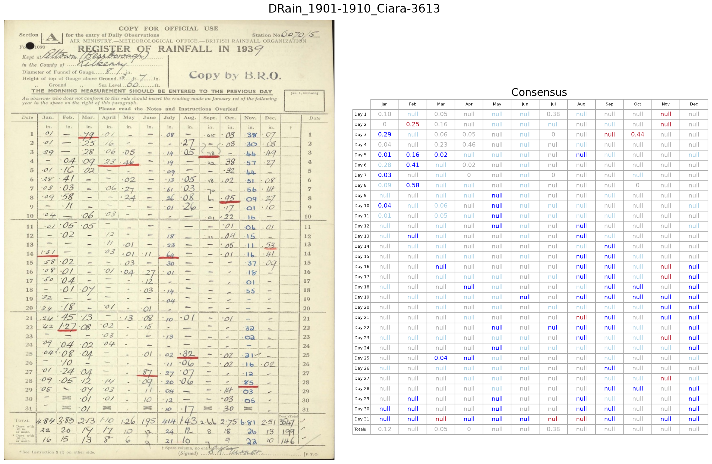

Zeroth order — the baseline¶
Before any fine-tuning, we measure the models exactly as they come from Hugging Face. This “zeroth order” baseline is what every later improvement is judged against.
Two notebooks:
Each notebook specifies the models to use, runs an extraction job for the test set on Azure ML, downloads the transcriptions, and compares them against the ground truth to produce validation summaries and comparison figures.
The raw models are not good enough¶
On the real test set, the un-fine-tuned models range from hopeless to mediocre:
Model |
Accuracy on real test set |
|---|---|
Ministral |
62% |
Granite |
46% |
Gemma edge |
39% |
SmolVLM |
32% |
Gemma-3 |
21% |
Even the best model gets fewer than two thirds of the values right. Here is what that looks like on a single test image — blue numbers are correct, red are wrong:
{kind=link}

A raw, un-fine-tuned model on one real test image. It manages the easy entries but makes many mistakes (red) — nowhere near good enough to use.¶
That is the starting point. The next stage shows how much a single round of fine-tuning helps.
What you have after this stage¶
Baseline accuracy for every model, on both fake and real data.
A yardstick to measure the effect of fine-tuning.
Next: First order.